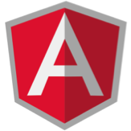

JS HTML5 Web App Workshop
With Angular.js and Zurb Foundation
Welcome
Your Instructor: Courtney Faulkner
Relevant Angular.JS Experience: Built a Single Page Web Application for a major insurance company and training the client to maintain and extend the application.
Your Host: NVISIA
NVISIA is a hands-on software development partner that specializes in building core business platforms with our clients. …bringing innovation to enterprise software development for 22 years.
Workshop Objectives
- Learn what defines a Single Page Application(SPA)
- Discuss how SPA compares to classical web application architecture
- Touch briefly on other SPA frameworks and libraries
- Learn the basics of Angular.js for a Responsive Design
Presentation available at:
http://www.nvisia.com/workshop-resources/angular-slidesWhy are you here?
How did we get here?
HTML from the beginning
- Static HTML content
- Web Forms, Struts, ASP
- Server based MVC, JSPs
- JSON and AJAX for RESTful data
- JavaScript 'Goo', DOM manipulation
- Structured JavaScript with HTML
- Beginning to embrace HTML5 and CSS3
- Need for a Mobile friendly solution
- Testability across platforms
- Desktop Application behaviors
SPA over Traditional
- The server no longer composes the page.
- A move to client side template engines.
- Server generated views can still be integrated.
- Server no longer maps page transitions.
- A move to client side routing methods.
- Server managed routes still work.
SPA over Traditional
- Content reuse.
- Page footer/header/menu is delivered once.
- Constants delivered to browser as needed.
- No more screen “blink” or non-responsive wait.
- Developers control progress/wait display.
- Long actions happen in the background.
- Difference in separation of code and web design.
Traditional Web Flow
SPA Web Flow
Examples
- Google Mail
- Many online email clients
SPA Frameworks and Libraries
- AngularJS
- Backbone.js
- Ember
- Knockout
- Others...

AngularJS
- Established, Largest Growth, Google Approved!
- No dependencies.
- Inspired by Flex and Silverlight, so it’s declarative and has no ‘main’.
- A declarative framework, where you annotate HTML 5 with declarations.
- Doesn't require ‘full commitment‘.
- The dependency injection allows you to declaratively describe how your application is wired.
- Used for the PS3 Youtube app, whichairline.com, dailybreak, and many others.
Backbone.js
- Mature, with codebase leveling out. (less commits)
- Has dependencies on Underscore and JQuery.
- A smaller library providing structure to architect with.
- Add Marionette to go from library to framework.
- Can be “Injected” and used with other libraries or frameworks.
- Uses Underscore’s template method, but Handlebars or Mustache commonly used.
- Used in apps like FourSquare, GroupOn, USAToday and many more.
Ember
- The largest framework, twice the size of Angular.
- The evolution of the Cocoa inspired SproutCore’s move towards JQuery.
- Has dependencies on JQuery and Handlebars.
- Intended to control the whole page, so only suitable to be used alone.
- Depends on scaffolding and convention.
- Uses Handlebars for templates.
- Used by Zendesk, Square, LivingSocial and many more.
Knockout
- Developed by Steve Sanderson, currently working for Microsoft.
- Considered an MVVM library.
- Declarative syntax similar to Angular.
- Declarative DOM based templates, but can also do string based.
- Small codebase.
- Gives importance to compatibility with older browsers.
- Used for amctheatres.com, pillsbury.com, jsFiddle and many others.
Workshop tool overview
Zurb Foundation sample behavior
sample.htmlMonday morning...
Your boss wants to quickly deploy a restaurant reservation system to take advantage of a new public rest api created by the chamber of commerce.
It allows anyone to get information about restaurants and make reservations.
The chamber of commerce plans to expand this service in the future, so she wants to get in on the ground floor.
Since your boss wants this application quickly, the web designer has already created up a mock up for you to use in building the application.
Since you’ve been hearing about building SPAs; you’ve decided to use AngularJS to build the application.
Server Backend
Node.js running a filesystem database
| Service URL | Parameters | Request Type | Description |
|---|---|---|---|
| /restaurants | GET | List of Restaurants | |
| /restaurants/:id | :id ==> Restaurant Id | GET | Single Restaurant |
| /restaurants/:id/reservations | :id ==> Restaurant Id | GET | Get list of Reservations and Available Times for a Restaurant |
| /reservations/:id | :id ==> Reservation Id | GET | Get a single reservation |
| /reservations/ | reservation request details. | POST | Save a Reservation |
Application Demo
SPA ApplicationDirectory Structure
- reset.bat
- reset.sh
- run.bat
- run.sh
- node_modules
- webapp
- css
- img
- js
- app.js
- controllers.js
- directives.js
- formatters.js
- services.js
- libs
- partials
- unit
- index.html
- test.html
Domain Model
Workshop Exercises Overview
- Getting started - bootstrapping
- Binding
- RESTful Services
- Partials & Router
- Validation
- Move from $http to $resources
- Directives
Getting Started
- Bootstrapping AngularJS
- Creating a Controller
- Dependency Injection
Bootstrapping Angular JS
<html class="no-js" lang="en" ng-app="restaurantReservationApp" >
<body>
... omitted ...
</body>
</html>
/* End */
/*
* Create bootstrap module based on ng-app name. (app.js)
*/
var restaurantReservationApp =
new angular.module('restaurantReservationApp', []);
/* End */
Creating a Controller
/*
* Add a Controller to provide the Restaurant List. (controllers.js)
* RestaurantListController is the ng-controller value in index.html.
* It identifies the DOM element that this controller 'controls'
*/
var restaurantReservationControllers = new angular.module('restaurantReservationControllers', []);
restaurantReservationControllers.controller('RestaurantListController', function ($scope) {
$scope.restaurants = [
{some restaurant information here},
{more restaurant information}
...
];
/* End */
Specify Controller Class
/*
* A List of Restaurants (index.html)
*/
...
/* End */
Dependency Injection
/*
* Create bootstrap module based on ng-app name. (app.js)
*/
var restaurantReservationApp = angular.module('restaurantReservationApp', [
'restaurantReservationControllers',
'formatters'
]);
/* End */
Exercise #1
- Add Bootstrap to index.html
- Create Application Module with Dependencies
- Creating a Controller
Bootstrap Application and Specify Controller
<html class="no-js" lang="en" ng-app="restaurantReservationApp">
... omitted...
<body class="restaurant">
...omitted...
</body>
Application Module with Dependencies Injected
/*
* Create bootstrap module based on ng-app name. (app.js)
*/
var restaurantReservationApp = angular.module('restaurantReservationApp', [
'restaurantReservationControllers',
'formatters'
]);
/* End */
Creating a Controller
/*
* Create Controllers module. (controllers.js)
*/
var restaurantReservationControllers =
new angular.module('restaurantReservationControllers', []);
// RestaurantListController is the ng-controller value in index.html.
// It identifies the DOM element that this controller 'controls'
restaurantReservationControllers.controller('RestaurantListController', function ($scope) {
$scope.restaurants = [
{"name": "Shogun", "cuisine": "Sushi", ...
...
{"name": "Eddie Martini's", "cuisine": "Steakhouse", ...
];
});
/* End */
Test our results
- An unsorted list of restaurants will now be displayed
Launch your node.js server and test the changes. (run.sh or run.bat)
http://localhost:9000/index.htmlLink to solution source:
Questions?
To Reset, perform a git checkout
Prompt:> git checkout tags/ex1-solution;
or
Prompt:> git checkout -f tags/ex1-solution;
HTML Binding
- curly braces {{ }} and ng-bind
- query and ng-repeat
- binding with ng-model
- filter
Binding
/**
* ng-bind and curly braces binding (index.html)
**/
...
Price: {{restaurant.price|priceFormatter}}
Rating: {{restaurant.rating|ratingFormatter}}
Address:
...
/* end */
ng-repeat
/**
* restaurant row reapeater (index.html)
**/
/* end */
ng-model
/*
* ng-model (reservation form partial)
*/
Filter
/**
* filter
**/
/* end */
Formatter Filter
/**
* priceFormatter (index.html)
**/
Price: {{restaurant.price | priceFormatter}}
/* end */
/**
* priceFormatter (formatters.js)
**/
filter('priceFormatter',function () {
return function (price, emptyStrText) {
var index, out = "";
for (index = 1; index <= price; index++) {
out += "$";
}
return out;
}
}).
/* end */
Exercise #2
- Add filter and order Restaurant List
- Add Query to search for Restaurant by name
Sort Restaurant List
/**
* (index.html) order the restaurant list by name
**/
ng-repeat="restaurant in restaurants |filter:query | orderBy:'name'"
/* end */
Enable Search for Restaurant
/**
* (index.html) A text box to allow searching for a restaurant
**/
... ommitted ....
/* end */
ng-bind
/**
* (index.html) Use ng-bind to bind the Address and Description
**/
{{restaurant.name}}
Price: {{restaurant.price | priceFormatter}}
Rating: {{restaurant.rating | ratingFormatter}}
Address:
Description:
/* end */
Add Formatters
/**
* (index.html) Add formatters
**/
{{restaurant.name}}
Price: {{restaurant.price | priceFormatter}}
Rating: {{restaurant.rating | ratingFormatter}}
Address:
Description:
/* end */
Test our results
- The restaurant list will now be sorted and a search box is functional
Launch your node.js server and test the changes. (run.sh or run.bat)
http://localhost:9000/index.html
Link to solution source:
Questions?
To Reset, perform a git checkout
Prompt:> git checkout tags/ex2-solution;
or
Prompt:> git checkout -f tags/ex2-solution;
RESTful services via $http
- Connecting to REST services
Connecting to REST services
// RestaurantListController is the ng-controller value in index.html.
// It identifies the DOM element that this controller 'controls'
// This can be done a couple different ways.
// However, this way supports minification and tends to be the preferred method.
restaurantReservationModule.controller('RestaurantListController', ['$scope', '$http',
function ($scope, $http) {
// Use the Angular http service to retrieve the Restaurants.
$http.get('/restaurants').success(function (data) {
$scope.restaurants = data;
});
}]);
Exercise #3
- Replace static restaurant list with $http
REST Support
/**
* Add REST support for Restaurant List. (controllers.js)
**/
restaurantReservationModule.controller('RestaurantListController', ['$scope', '$http',
function ($scope, $http) {
// Use the Angular http service to retrieve the Restaurants.
$http.get('/restaurants').success(function (data) {
$scope.restaurants = data;
});
$scope.orderProp = 'name'; // Defaults the order property to the Name value.
}]);
Test our results
- No visible changes
- Data is now being pulled from the REST service rather than the static list
Launch your node.js server and test the changes. (run.sh or run.bat)
http://localhost:9000/index.html
Link to solution source:
Questions?
To Reset, perform a git checkout
Prompt:> git checkout tags/ex3-solution;
or
Prompt:> git checkout -f tags/ex3-solution;
MVC
- HTML Partial as a template
- Using a Router
- Connect Partials to the Controller
Partials
/**
* A "partial" bit of html that displays the retaurant list
**/
/* end */
Router
/**
* Defines and injects the routeProvider into the config function of our application
**/
restaurantReservationApp.config(['$routeProvider',
function ($routeProvider) {
$routeProvider
.when('/restaurants', {
templateUrl: 'partials/restaurant-list.html',
controller: 'RestaurantListController'
})
... ommitted ...
}]);
/* end */
/**
* Routers require ngRoute
**/
var restaurantReservationApp = angular.module('restaurantReservationApp', [
'restaurantReservationControllers',
'formatters',
'ngRoute'
]);
/* end */
ngView
/**
* ngView is a directive that renders the template of the current route
**/
/* end */
Exercise #4
- Add the Router
- Connect Partials to the Controller
Add the Route Dependency
/**
* Inject the ngRoute parameter into the restaurantReservationApp module (app.js)
**/
var restaurantReservationApp = angular.module('restaurantReservationApp', [
'restaurantReservationControllers',
'formatters',
'ngRoute'
]);
/* end */
Add the Router
/**
* Uncomment the router already defined (app.js)
**/
restaurantReservationApp.config(['$routeProvider',
function ($routeProvider) {
$routeProvider
.when('/restaurants', {
templateUrl: 'partials/restaurant-list.html',
controller: 'RestaurantListController'
})
.when('/restaurant/:id', {
templateUrl:'partials/restaurant-detail.html',
controller:'RestaurantDetailController'
})
.when('/reservation/:id', {
templateUrl:'partials/reservation-detail.html',
controller:'ReservationDetailController'
})
.otherwise({
redirectTo: '/restaurants'
});
}]);
/* end */
Connect Partials to the Controller
/**
* Remove the entire RestaurantListController div and replace
* with the ng-view div defined below. (index.html)
**/
Remove ...
... ommitted ...
... and replace with ...
/**
** ng-view renders the template of the current route as defined in the router
**/
/* end */
Test our results
- Show Times button appears, navigates to restaurant details
- Clicking on a time displays the reservation form
- The Make Reservation button is always enabled
Launch your node.js server and test the changes. (run.sh or run.bat)
http://localhost:9000/index.html
Link to solution source:
Questions?
To Reset, perform a git checkout
Prompt:> git checkout tags/ex4-solution;
or
Prompt:> git checkout -f tags/ex4-solution;
Validation
- Required fields
- Patterns
- Disabling
Required fields
/**
* Add 'required' key word to make a field mandatory.
**/
/* end */
Patterns
/**
* Add ng-pattern to validate fields like a phone number.
**/
/* end */
Disabling
/**
* use ng-disabled to disable things like buttons until form data is complete.
**/
/* end */
Exercise #5 - Validation
- Make some fields mandatory
- Enforce a valid phone number format
- Disabling the submit button
Required fields
/**
* Make Number of Guests and Name fields mandatory (restaurant-reservation-form.js)
**/
/* end */
/**
* Note the styling (base.css)
**/
.css-form input.ng-invalid.ng-dirty {
background-color: #FA787E;
}
.css-form input.ng-valid.ng-dirty {
background-color: #78FA89;
}
/* end */
Patterns
/**
* Add a pattern to the phone number field. (restaurant-reservation-form.js)
**/
/* end */
Disabling
/**
* Disable the submit button until the form data is complete. (restaurant-reservation-form.js)
**/
/* end */
Test our results
- Number of guests and name fields are required
- Phone number and email must be in a valid format
- The Make Reservation button is enabled only when valid
Launch your node.js server and test the changes. (run.sh or run.bat)
http://localhost:9000/index.html
Link to solution source:
restaurant-reservation-form.html
Questions?
To Reset, perform a git checkout
Prompt:> git checkout tags/ex5-solution;
or
Prompt:> git checkout -f tags/ex5-solution;
Using Resources
- Creating $resource services
- Defining $resource service methods
$resource
$resource is a factory that enables you to call RESTful server-side APIs
$resource services
/**
*
* $resource factory removes the need to interact with $http directly
**/
restaurantServices.factory('Restaurant', ['$resource',
function ($resource) {
return $resource('/restaurants/:restaurantId/:reservations', {restaurantId: '@restaurantId'}, {
GetRestaurant: {method: 'GET', params: {restaurantId: 'restaurantId'}, cache: true},
GetAllRestaurants: {method: 'GET', params: {}, isArray: true},
GetReservations: {method: 'GET', params: {restaurantId: 'restaurantId', reservations: 'reservations'}}
});
}]);
/* end */
$resource service methods
/**
*
* defines the getter methods for retrieving restaurant data
**/
restaurantServices.factory('Restaurant', ['$resource',
function ($resource) {
return $resource('/restaurants/:restaurantId/:reservations', {restaurantId: '@restaurantId'}, {
GetRestaurant: {method: 'GET', params: {restaurantId: 'restaurantId'}, cache: true},
GetAllRestaurants: {method: 'GET', params: {}, isArray: true},
GetReservations: {method: 'GET', params: {restaurantId: 'restaurantId', reservations: 'reservations'}}
});
}]);
/* end */
Exercise #6 - $http to $resource
- Create $resource services
- Inject RestaurantServices into RestaurantReservationModule
- Convert controllers
Create resource services
/**
* restaurantServices are defined in services.js
**/
restaurantServices.factory('Restaurant', ['$resource',
function ($resource) {
return $resource('/restaurants/:restaurantId/:reservations', {restaurantId: '@restaurantId'}, {
GetRestaurant: {method: 'GET', params: {restaurantId: 'restaurantId'}, cache: true},
GetAllRestaurants: {method: 'GET', params: {}, isArray: true},
GetReservations: {method: 'GET', params: {restaurantId: 'restaurantId', reservations: 'reservations'}}
});
}]);
restaurantServices.factory('Reservation', ['$resource',
function ($resource) {
return $resource('/reservations/:reservationId', {reservationId: '@reservationId'});
}
]);
/* end */
Inject RestaurantServices
/**
* Add the restaurantServices to the restaurantReservationController (controllers.js)
**/
var restaurantReservationModule =
new angular.module('restaurantReservationControllers', ['restaurantServices']);
/* end */
Convert Controllers to use resource services
Change the RestaurantListController to use $resource service rather than $http (controllers.js)
restaurantReservationModule.controller('RestaurantListController', ['$scope', '$http',
function ($scope, $http) {
// Use the Angular http service to retrieve the Restaurants.
$http.get('/restaurants').success(function (data) {
$scope.restaurants = data;
});
restaurantReservationModule.controller('RestaurantListController', ['$scope', 'Restaurant',
function ($scope, Restaurant) {
$scope.restaurants = Restaurant.GetAllRestaurants();
$scope.orderProp = 'name'; // Defaults the order property to the Name value.
}]);
Convert Controllers to use resource services
Change the RestaurantDetailController to use $resource service rather than $http (controllers.js)
restaurantReservationModule.controller('RestaurantDetailController', ['$scope', '$routeParams', '$location', 'Restaurant',
function ($scope, $routeParams, $location, Restaurant) {
$scope.reservation;
$scope.restaurant = Restaurant.GetRestaurant({restaurantId: $routeParams.id});
Restaurant.GetReservations({restaurantId: $routeParams.id},
function (data) {
$scope.available = data.available;
});
$scope.selectTime = function (selectedTime) {
$scope.selectedTime = selectedTime;
};
}]);
Convert Controllers to use resource services
Change the ReservationFormController to use $resource service rather than $http (controllers.js)
restaurantReservationModule.controller('ReservationFormController',['$scope','$location','Reservation',
function ($scope, $location, Reservation) {
$scope.makeReservation = function () {
if ($scope.reservation) {
$scope.reservation.restaurantId = $scope.restaurant.id;
$scope.reservation.time = $scope.selectedTime;
}
var newReservation = new Reservation($scope.reservation);
// Use built-in save function (using a POST) (Non-GET are prefixed with a '$')
newReservation.$save(function (reservation) {
$location.path("/reservation/" + reservation.id);
});
};
}]);
Convert Controllers to use resource services
Change the ReservationDetailController to use $resource service rather than $http (controllers.js)
restaurantReservationModule.controller('ReservationDetailController', ['$scope', '$routeParams', 'Reservation', 'Restaurant',
function ($scope,$routeParams, Reservation, Restaurant) {
$scope.reservation = Reservation.get({reservationId: $routeParams.id}, function (reservation) {
$scope.restaurant = Restaurant.GetRestaurant({restaurantId: reservation.restaurantId});
});
}]);
Test our results
- No visible changes, but the application is now using $resource services rather than $http
Launch your node.js server and test the changes. (run.sh or run.bat)
http://localhost:9000/index.html
Link to solution source:
Questions?
To Reset, perform a git checkout
Prompt:> git checkout tags/ex6-solution;
or
Prompt:> git checkout -f tags/ex6-solution;
Custom Directives
- Defining a Custom Directive
- Using a Custom Directive
- ng-transclude
Defining a Custom Directive
Directives are markers that allow you to attach behavior to DOM elements
/*
* nvisiaRestaurant custom directive that attaches the restaurant partial to an
* Attribute or Element
*/
angular.module('customDirectives', [])
.directive('nvisiaRestaurant', function() {
return {
restrict: 'AE',
scope: {
restaurant: '='
},
templateUrl: 'partials/restaurant.html'
};
})
/* end */
Using a Custom Directive
/*
* specifing the nvisia-restaurant custom directive
*/
ng-transclude
ngTransclude is a directive that indicates if content of an element will be replaced
/*
* defining the nvisiaButton custom directive using
*/
.directive('nvisiaButton', function() {
return {
restrict: 'E',
transclude: true,
scope: {
href: '@href'
},
template: ''
};
/* end */
Exercise #7 - Custom Directives
- Convert Restaurant to a Directive
- Convert a button to a Directive
- Using ng-transclude on a button
Add the Directives dependency
/*
* add customDirectives to the restaurantReservationApp (app.js)
* customDirectives are defined in directives.js
*/
var restaurantReservationApp = angular.module('restaurantReservationApp', [
'restaurantReservationControllers',
'formatters',
'ngRoute',
'customDirectives'
]);
Convert Restaurant to a directive
/*
* replace the restaurant list partials include with a custom directive (restaurant-list.html)
*/
Show Times
/* end */
Convert Button to a directive
/*
* replace the show times button with a custom directive (restaurant-list.html)
*/
Show Times
/* end */
Using ng-transclude on a button
/*
* set transclude to true and include the ng-transclude in html (directives.js)
*/
.directive('nvisiaButton', function() {
return {
restrict: 'E',
transclude: true,
scope: {
href: '@href'
},
template: ''
};
});
/* end */
Test our results
- No visible changes
- The application is now using custom directives to render Restaurants and the Show Times button
Launch your node.js server and test the changes. (run.sh or run.bat)
http://localhost:9000/index.html
Link to solution source:
Questions?
To Reset, perform a git checkout
Prompt:> git checkout tags/ex7-solution;
or
Prompt:> git checkout -f tags/ex7-solution;
Taking it Further
- Unit Testing
- Security
- Mobile
- Angular-ui
- $q
Karma Unit Testing
describe('restaurantReservationControllers', function(){
var scope, ctrl, $httpBackend;
// The injector ignores leading and trailing underscores here (i.e. _$httpBackend_).
// This allows us to inject a service but then attach it to a variable
// with the same name as the service.
beforeEach(inject(function(_$httpBackend_, $rootScope, $controller) {
$httpBackend = _$httpBackend_;
$httpBackend.expectGET('/restaurants').
respond(restaurantData());
scope = $rootScope.$new();
ctrl = $controller('RestaurantListController', {$scope: scope});
}));
it('should create "restaurants" model with 2 restaurants fetched from xhr', function() {
expect(scope.restaurants).toEqualData([]);
$httpBackend.flush();
expect(scope.restaurants).toEqualData(restaurantData());
expect(scope.restaurants.length).toBeGreaterThan(0);
});
it('should set the default value of orderProp model', function() {
expect(scope.orderProp).toBe('name');
});
});
Security
- Authentication - Login
- Access Security - Data Redaction
Angular-ui
http://angular-ui.github.io/
$q
http://docs.angularjs.org/api/ng/service/$q
Questions
Contact Us
-
Courtney Faulkner:
cfaulkner@nvisia.com
-
Eric Zunke:
ezunke@nvisia.com
-
Mathew Easow:
measow@nvisia.com
-
Mark Panthofer:
mpanthofer@nvisia.com
-
Workshop
Resource Page
Resources
API
AngularJs - http://angularjs.org/
AngularJs Modules - http://ngmodules.org/
AngularJs UI - http://angular-ui.github.io/bootstrap/
Karma - http://karma-runner.github.io/
AngularJs Batarang - https://github.com/angular/angularjs-batarang
Thank you